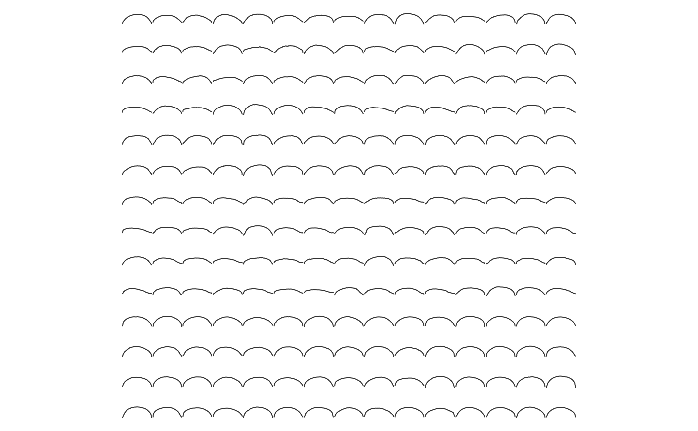
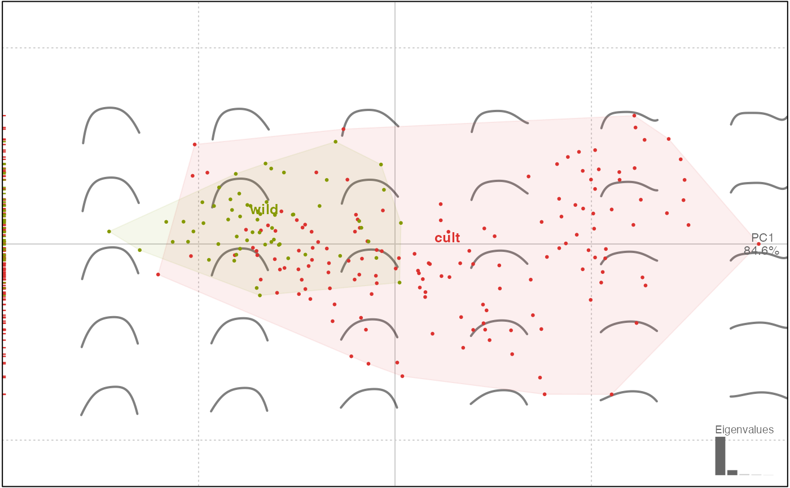

Builds an Opn object
In Momocs, Opn classes objects are
lists of open outlines, with optionnal components,
on which generic methods such as plotting methods (e.g. stack)
and specific methods (e.g. npoly can be applied.
Opn objects are primarily Coo objects.
Opn(x, fac = data.frame(), ldk = list())
Arguments
| x |
|
|---|---|
| fac | (optionnal) a |
| ldk | (optionnal) |
Value
an Opn object
See also
Other classes: Coe, Coo,
OpnCoe, OutCoe,
Out, TraCoe
Examples
#Methods on Opn methods(class=Opn)#> [1] add_ldk calibrate_deviations #> [3] calibrate_harmonicpower calibrate_reconstructions #> [5] combine coo_bookstein #> [7] coo_sample_prop coo_sample #> [9] coo_slice coo_smoothcurve #> [11] def_ldk_angle def_ldk_direction #> [13] def_ldk_tips def_ldk #> [15] dfourier fgProcrustes #> [17] get_ldk npoly #> [19] opoly panel #> [21] print rearrange_ldk #> see '?methods' for accessing help and source code# we load some open outlines. See ?olea for credits olea#> An Opn object with: #> - $coo: 210 open outlines (99 +/- 4 coordinates) #> - $fac: 4 classifiers: #> 'var' (factor 4): Aglan, Cypre, MouBo1, PicMa. #> 'domes' (factor 2): cult, wild. #> 'view' (factor 2): VD, VL. #> 'ind' (factor 30): O1, O10, O11, O12, O13, O14, O15, O16, O17, O18, O19 ... + 19 more.panel(olea)#># we print the Coe op#> An OpnCoe object [ opoly analysis ] #> -------------------- #> - $coe: 210 open outlines described #> - $baseline1: (-0.5; 0), $baseline2: (0.5; 0) #> - $fac: 4 classifiers: #> 'var' (factor 4): Aglan, Cypre, MouBo1, PicMa. #> 'domes' (factor 2): cult, wild. #> 'view' (factor 2): VD, VL. #> 'ind' (factor 30): O1, O10, O11, O12, O13, O14, O15, O16, O17, O18, O19 ... + 19 more.plot(op.p, 'var')#>#># for CV table olda#> * Leave-one-out cross-validation ($CV.correct): (54.3% - 114/210): #> #> * Class correctness ($CV.ce): #> Aglan Cypre MouBo1 PicMa #> 0.3500000 0.1333333 0.9000000 0.5833333 #> #> * Cross-validation table ($CV.tab): #> classified #> actual Aglan Cypre MouBo1 PicMa #> Aglan 21 2 17 20 #> Cypre 12 4 14 0 #> MouBo1 4 2 54 0 #> PicMa 22 1 2 35plot(olda)